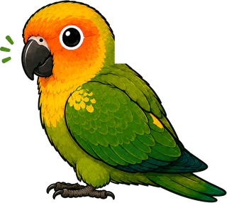

キャラクター紹介

オトン学園
オットン
頼れるオトンのように、どっしり構えて、
子どもたちの可能性を信じ、支える存在。
「いつでも味方やで！」
どっしり支えるブレない信頼感
やる気を引き出す一人ひとりの可能性を信じて
ともに歩む親身で熱いサポート
成績アップへ導く目標達成まで伴走

オカン学園
オカーン
子どもたちをやさしく包み込み、
毎日のがんばりを一番近くで支える存在。
復習を大切にし、できた！を一緒に喜ぶ
頼れるおかあさん。
「いつでも応援してるで！」
元気をチャージがんばる子をやさしくサポート
復習チェックできるまで寄り添い、力に変える
ほめて伸ばす小さな成長も見逃さず、自信につなげる
自信を育てる「できた！」を積み重ねて、目標まで一緒に伴走

ボタンインコ
チッチ
本当の名前は…ナッツ
オカーンの頭に乗って、
いつもみんなを見守っている黄色のボタンインコ。
小さな体で、大きな応援を届けるよ！
性格は好奇心旺盛で甘えんぼう。
「がんばってるやん！」
おしらせ係連続学習日数や大事なお知らせを教えるよ
やる気チャージ係「えらいえらい！」ってやる気をチャージ
見守り係いつもそっと見守って、みんなの味方だよ
なかよくなると…？ごほうびスタンプがもらえるかも！

コガネメキシコインコ
ジェイド
チッチの弟分
のんびり屋さんで、落ち着いた性格。
そばでお昼寝するのが大好き。
鳴くときは「ワン！」といいます。
ウンチすると、すっと体をずらします。
「ワン！」
おっとり癒し系落ち着いていて、みんなを癒します
お昼寝が大好きそばで寝ている姿にほっこり
鳴くときは「ワン！」元気いっぱいのかわいい声♪
きれい好きウンチすると、すっと体をずらす